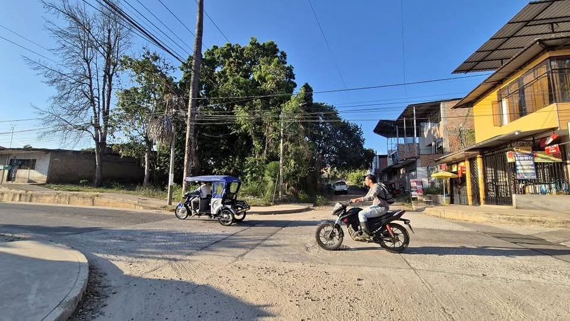

Precio desconocido 160 m²

Se remata terreno ubicado a 3 cuadras de la plaza de morales, de 8x20, 160 m2 Calle altamente transitada Servicios de agua, luz y desagüe Documentos en regla Precio negociable Trato directo Contactos al 9️⃣7️⃣5️⃣4️⃣3️⃣6️⃣3️⃣0️⃣9️⃣